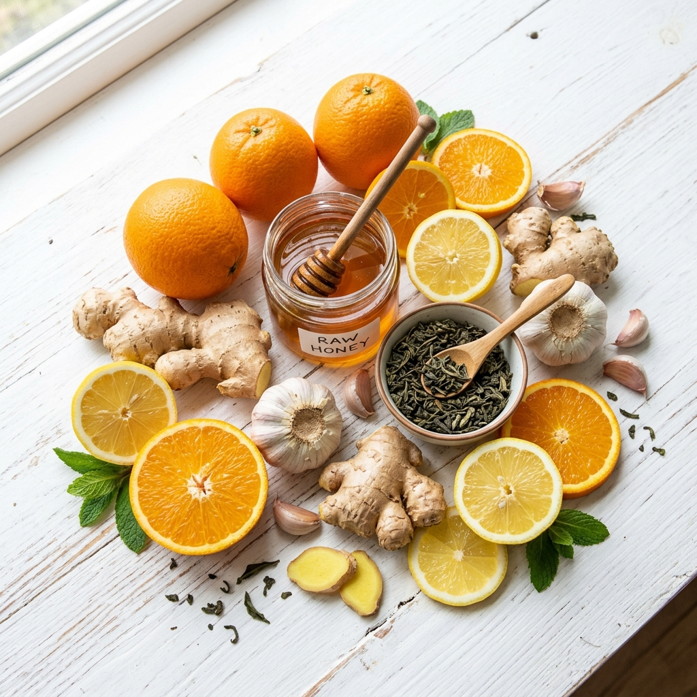
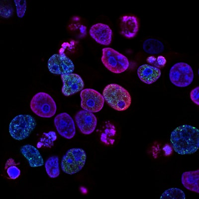
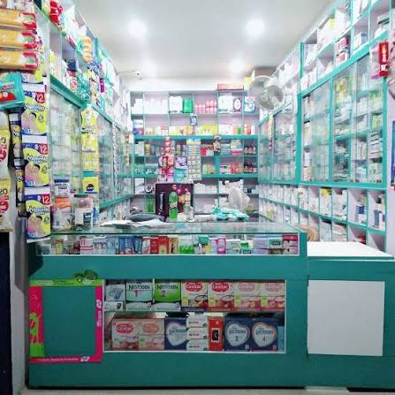

10 Tips for Maintaining a Healthy Immunity System
A robust immune system shields you from seasonal illnesses and pathogens. Discover the optimal diet, essential supplements, and lifestyle habits to reinforce your body's natural defenses.

A robust immune system shields you from seasonal illnesses and pathogens. Discover the optimal diet, essential supplements, and lifestyle habits to reinforce your body's natural defenses.
Modern indoor lifestyles have made Vitamin D deficiency a widespread concern. Learn to recognize the symptoms early and explore natural sources and clinical remedies.

Understanding your microbiome is key to overall wellness. Learn how probiotics and prebiotic foods enhance digestion, support mood balance, and boost your immune response.
Quality sleep is as essential as diet and exercise. Discover simple lifestyle shifts, daily routine changes, and natural herbal aids to help you fall asleep faster and wake up refreshed.
From supporting heart health and reducing cognitive decline to lowering internal inflammation, Omega-3 fatty acids are critical. Explore what the latest clinical trials show about daily supplementation.

High blood pressure often has no visible symptoms but can lead to severe cardiovascular issues. Learn how to track your readings accurately and discover methods to maintain healthy levels.
Free radicals cause cellular damage and accelerate skin aging over time. Find out how daily foods rich in Vitamin C, Vitamin E, and Beta-Carotene fight oxidative stress to support healthy aging.
Spring brings pollen, leading to standard seasonal allergies. Discover effective daily preventative routines, natural antihistamines, and skin barriers to keep your systems clear.
Early detection of prediabetes can significantly reduce Type-2 risks. Learn to recognize the subtle warnings like constant fatigue, increased thirst, and blurred vision before they progress.

Over-the-counter painkillers are extremely common, but chronic overuse can damage liver and kidneys. Read our medical guidelines on safe dosages, warnings, and potential drug interactions.
Juices and detox teas claim to purify body organs, but your liver and kidneys already handle detoxification naturally. Learn what scientific research says about healthy, natural cleansing.
Chronic stress and mental fatigue trigger physical symptoms like inflammation, gut disorders, and cardiovascular risks. Discover clinical tips to maintain healthy emotional and physical wellness.